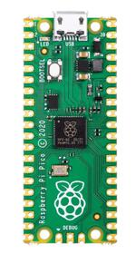
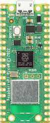

Raspberry Pi Pico
Overview
The Raspberry Pi Pico [1] and Pico W are small, low-cost, versatile boards from Raspberry Pi. They are equipped with an RP2040 [2] SoC, an on-board LED, a USB connector, and an SWD interface.
The Pico W additionally contains an Infineon CYW43439 [3] 2.4 GHz Wi-Fi/Bluetooth module.
The USB bootloader allows the ability to flash without any adapter, in a drag-and-drop manner. It is also possible to flash and debug the boards with their SWD interface, using an external adapter.
Hardware
Dual core Arm Cortex-M0+ processor running up to 133MHz
264KB on-chip SRAM
2MB on-board QSPI flash with XIP capabilities
26 GPIO pins
3 Analog inputs
2 UART peripherals
2 SPI controllers
2 I2C controllers
16 PWM channels
USB 1.1 controller (host/device)
8 Programmable I/O (PIO) for custom peripherals
On-board LED
1 Watchdog timer peripheral
Infineon CYW43439 2.4 GHz Wi-Fi chip (Pico W only)


Raspberry Pi Pico (above) and Pico W (below) (Images courtesy of Raspberry Pi)
Supported Features
The rpi_pico board supports the hardware features listed below.
- on-chip / on-board
- Feature integrated in the SoC / present on the board.
- 2 / 2
-
Number of instances that are enabled / disabled.
Click on the label to see the first instance of this feature in the board/SoC DTS files. -
vnd,foo -
Compatible string for the Devicetree binding matching the feature.
Click on the link to view the binding documentation.
Pin Mapping
The peripherals of the RP2040 SoC can be routed to various pins on the board. The configuration of these routes can be modified through DTS. Please refer to the datasheet to see the possible routings for each peripheral.
External pin mapping on the Pico W is identical to the Pico, but note that internal RP2040 GPIO lines 23, 24, 25, and 29 are routed to the Infineon module on the W. Since GPIO 25 is routed to the on-board LED on the Pico, but to the Infineon module on the Pico W, the “blinky” sample program does not work on the W (use hello_world for a simple test program instead).
Default Zephyr Peripheral Mapping:
UART0_TX : P0
UART0_RX : P1
I2C0_SDA : P4
I2C0_SCL : P5
I2C1_SDA : P6
I2C1_SCL : P7
SPI0_RX : P16
SPI0_CSN : P17
SPI0_SCK : P18
SPI0_TX : P19
ADC_CH0 : P26
ADC_CH1 : P27
ADC_CH2 : P28
ADC_CH3 : P29
Programmable I/O (PIO)
The RP2040 SoC comes with two PIO peripherals. These are two simple co-processors that are designed for I/O operations. The PIOs run a custom instruction set, generated from a custom assembly language. PIO programs are assembled using pioasm, a tool provided by Raspberry Pi.
Zephyr does not (currently) assemble PIO programs. Rather, they should be manually assembled and embedded in source code. An example of how this is done can be found at drivers/serial/uart_rpi_pico_pio.c.
Sample: SPI via PIO
The samples/sensor/bme280/README.rst sample includes a demonstration of using the PIO SPI driver to communicate with an environmental sensor. The PIO SPI driver supports using any combination of GPIO pins for an SPI bus, as well as allowing up to four independent SPI buses on a single board (using the two SPI devices as well as both PIO devices).
PIO Based Features
Raspberry Pi Pico’s PIO is a programmable chip that can implement a variety of peripherals.
Peripheral |
Kconfig option |
Devicetree compatible |
|---|---|---|
UART (PIO) |
||
SPI (PIO) |
||
WS2812 (PIO) |
System requirements
Prerequisites for the Pico W
Building for the Raspberry Pi Pico W requires the AIROC binary blobs provided by Infineon. Run the command below to retrieve those files:
west blobs fetch hal_infineon
Note
It is recommended running the command above after west update.
Programming and Debugging
The rpi_pico board supports the runners and associated west commands listed below.
| flash | debug |
|---|
Applications for the rpi_pico board configuration can be built and
flashed in the usual way (see Building an Application and
Run an Application for more details).
Several debugging tools support the Raspberry Pi Pico.
The Raspberry Pi Debug Probe [6] is an easy-to-obtain CMSIS-DAP adapter
officially provided by the Raspberry Pi Foundation,
making it a convenient choice for debugging rpi_pico.
It can be used with openocd or pyocd.
Flashing
The rpi_pico can flash with Zephyr’s standard method.
See also Building, Flashing and Debugging.
Using OpenOCD
To use a debugging adapter such as the Raspberry Pi Debug Probe, You must configure udev. Refer to Setting udev rules for details.
The Raspberry Pi Pico has an SWD interface that can be used to program and debug the onboard SoC. This interface can be used with OpenOCD. To use it, OpenOCD version 0.12.0 or later is needed.
If you are using a Debian based system (including Raspberry Pi OS, Ubuntu. and more), using the pico_setup.sh [4] script is a convenient way to set up the forked version of OpenOCD.
Here is an example of building and flashing the Blinky application.
# From the root of the zephyr repository
west build -b rpi_pico samples/basic/blinky -- -DRPI_PICO_DEBUG_ADAPTER=cmsis-dap
west flash --openocd /usr/local/bin/openocd
Set the flash runner option –openocd to /usr/local/bin/openocd. This should work
with the OpenOCD that was installed with the default configuration.
This configuration also works with an environment that is set up by the pico_setup.sh [4] script.
In this sample, RPI_PICO_DEBUG_ADAPTER specifies which debug adapter is used for debugging.
If RPI_PICO_DEBUG_ADAPTER was not set, cmsis-dap is used by default.
The raspberrypi-swd and jlink are verified to work.
How to connect cmsis-dap and raspberrypi-swd is described in Getting Started with Raspberry Pi Pico [5].
Any other SWD debug adapter maybe also work with this configuration.
The value of RPI_PICO_DEBUG_ADAPTER is cached, so it can be omitted from
west flash and west debug if it was previously set while running
west build.
RPI_PICO_DEBUG_ADAPTER is used in an argument to OpenOCD as "source [find interface/${RPI_PICO_DEBUG_ADAPTER}.cfg]".
Thus, RPI_PICO_DEBUG_ADAPTER needs to be assigned the file name of the debug adapter.
Using JLink or other supported tools
You can Flash with a SEGGER J-Link [7] debug probe as described in Building, Flashing and Debugging.
Here is an example of building and flashing the Blinky application.
# From the root of the zephyr repository
west build -b rpi_pico samples/basic/blinky
west flash --runner jlink
You can also use other supported tools, such as Black Magic Probe [8],
by changing the -- runner option.
Using UF2
If you don’t have an SWD adapter, you can flash the Raspberry Pi Pico with
a UF2 file. By default, building an app for this board will generate a
build/zephyr/zephyr.uf2 file. If the Pico is powered on with the BOOTSEL
button pressed, it will appear on the host as a mass storage device.
Run the following command, or drag-and-drop the uf2 file to the device,
which will flash the Pico.
# From the root of the zephyr repository
west build -b rpi_pico samples/basic/blinky
west flash --runner uf2
Debugging
Like flashing, debugging can also be performed using Zephyr’s standard method (see Run an Application). The following sample demonstrates how to debug using OpenOCD and the Raspberry Pi Debug Probe [6].
# From the root of the zephyr repository
west build -b rpi_pico samples/basic/blinky
west debug --openocd /usr/local/bin/openocd
The default debugging tool is openocd.
If you use a different tool, specify it with the --runner,
such as jlink.